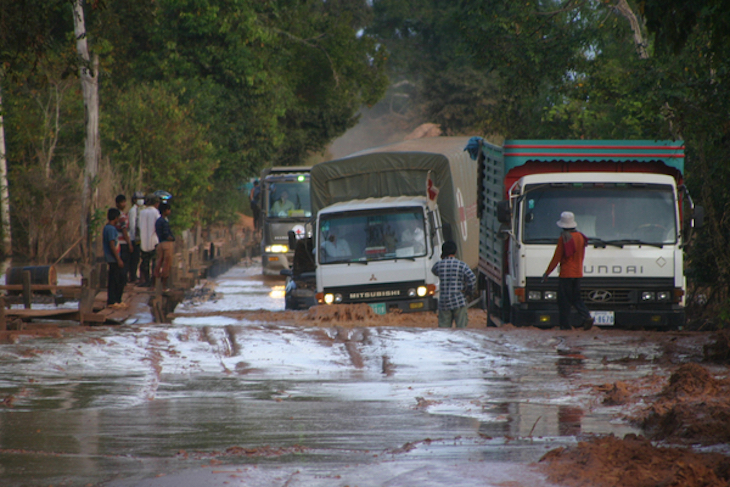
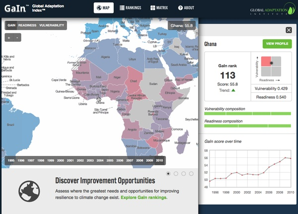
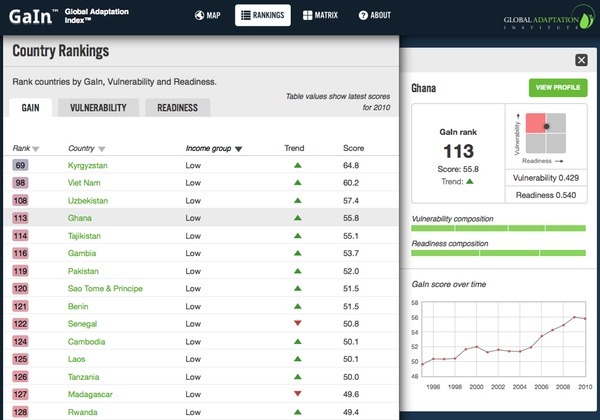
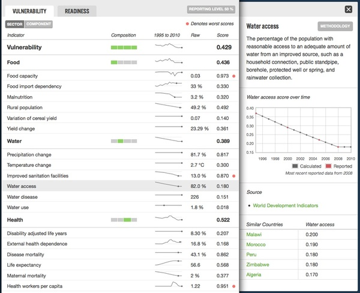
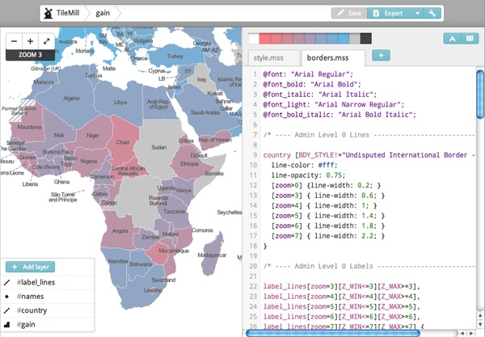
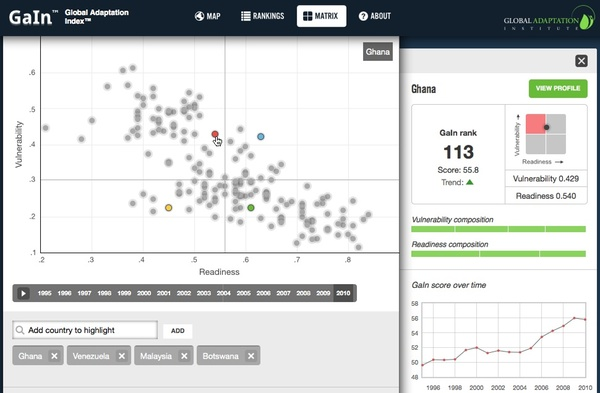
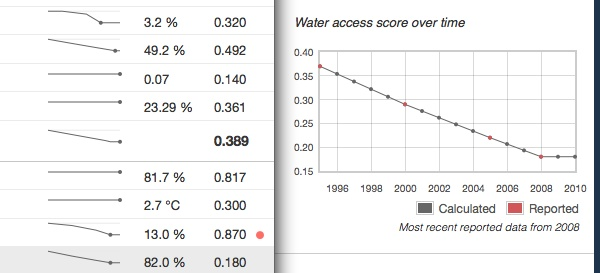
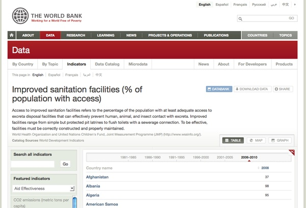
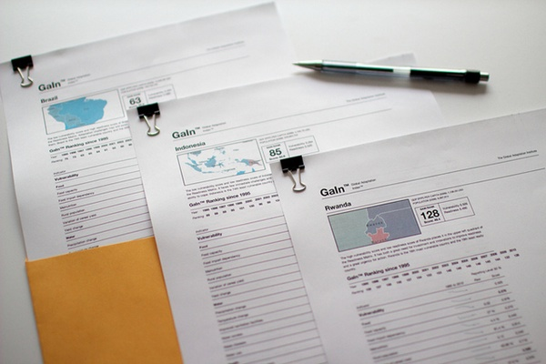

Adapting to Climate Change
Measuring countries' vulnerabilities and opportunities for improving resilience to climate change
The Global Adaptation Index is designed from ground up to be the leading navigational tool guiding business and public sector investments in adaptation to climate change. The index is not just a ranking of 161 countries’ ability to adapt, it is a multi-faceted tool that exposes countries’ specific vulnerabilities to climate change and their readiness to receive investments in resilience improving measures. It is based on 38 carefully selected indicators to measure factors like food security, infrastructure, and governance that weigh in on a country’s risk and ability to adapt.

Photo courtesy of World Bank Photo Collection. Roads flooding in Cambodia after Taiphoon Ketsana in 2009.
The Global Adaptation Index in particular targets public and private sector decision makers, subject matter experts, and journalists. The site’s information architecture does justice to this diverse audience by layering the components of the index in organically increasing amounts of detail as users navigate from the front page map to country rankings, to country profiles, and to the methodology section.
Built for speed
Browsing rich data demands a fast site. Visitors typically make heavy use of the site’s navigational tools as they compare countries, drill deeper into metrics, and answer questions like why two similar countries differ on a particular score. To this end, we have streamlined both the user interface and the actual page load performance.
The recurring user interface element on this site is a sidebar drawer containing rich contextual information. This approach radically decreases the need for opening new pages to get additional context making tasks like skimming country profiles very fast.
Clicking on a country on the map slides out a drawer to the right with a country summary.

This works the same on rankings:

On the country profiles themselves, we use the drawer paradigm to show additional information on scores and indicators:

The site’s software design follows the light server principle. After the first page view, subsequent views are built entirely in the browser. From there on out all that needs to be requested from the server is the pure data displayed on a page, which is of a much lower payload then the entire rendered HTML document. This approach shines on heavy pages like the rankings that - while very long - are still fast to navigate.
Dynamically generated, shaded maps
The site’s front page maps the Global Adaptation Index. The filtering options on the map together with the fact that the index goes back 15 years makes for 90 maps, a number of maps that would be too expensive to be created manually. Using MapBox technology, we have created a fast on-the-fly rendering mechanism that takes the map design created in TileMill and applies it dynamically to data provided by gain.globalai.org. Here is how we designed the map in TileMill - compare this screenshot to the one from the actual site further above.

Interactive motion graph
The Readiness Matrix plots countries by the scores that make up the Global Adaptation Index - vulnerability and readiness. Comparing countries directly by their vulnerability to climate change and their readiness to accept investment is extremely revealing - similarities between countries become visible and unexpected high and low performers emerge. Additionally, the development of scores over time gives an important insight in trends.
We built an interactive motion graph using the graphing library d3 comparing countries along vulnerability and readiness over time in a straightforward and intuitive way.

Showing sparsity of data
The Global Adaptation Index uses interpolation and extrapolation to make up for not reported years in indicators. Graphs faithfully mark calculated data points.

Using open data
The team behind the Global Adaptation Index intentionally used openly and freely available data to compose the index. This means that in many cases, sources are not only provided online but actually linked to. Take for instance the water access indicator, it has a unique and permanent URL on the web:
http://data.worldbank.org/indicator/SH.STA.ACSN
The simple fact that its URL is unique and permanent allowed us to link directly from an indicator’s source reference to the home of the indicator on the web. The result is the ability to follow the data and browse resources across the traditional boundaries of web properties.

Offline media
We’ve used print stylesheets to streamline the site’s look for print media. A printed country page looks and feels like a made-for-print briefing and is a great resource to provide at meetings or conferences. Here is an example of the profiles for Brazil, India, and Indonesia, printed directly from their country pages:
